Biography
Composer, choirmaster, opera director and music publisher: William Hawes helped shape London’s musical life, from the Chapel Royal and St Paul’s to the Lyceum, the Adelphi Theatre and the Argyll Rooms.
St George’s, Hanover Square: birth and marriage
A family-held certified baptism extract records William as born on 24 June 1785, son of John and Ann Hawes, and baptised on 3 July 1785 at St George’s, Hanover Square. A marriage-register extract records William Hawes and Elizabeth Mullinex marrying there by banns on 12 March 1805; both were described as belonging to the parish. Earlier family research gave his birthday as 21 June, so this discrepancy is retained pending inspection of the underlying parish page.
An account published during his lifetime
John Sainsbury’s 1824 Dictionary of Musicians gives a remarkably detailed account of William Hawes’s professional life through 1820. It places him among the musicians who shaped London’s church music, theatre orchestras, concerts and music publishing. A full transcription of the period biography is preserved separately in the family source collection.
1793–1801: a Chapel Royal chorister
The 1824 dictionary states that Hawes entered the Chapel Royal as a chorister under Edmund Ayrton in 1793 and remained until 1801. This is a published contemporary account rather than a surviving choir admission register.
1802–1808: professional beginnings
According to the dictionary, he played violin in the Covent Garden theatre orchestra and began teaching singing in 1802, became deputy vicar-choral at Westminster Abbey in 1803, and was appointed a Gentleman in Ordinary of the Chapel Royal in July 1805. It also records professional and honorary society memberships from 1806 to 1808.
1813–1817: national musical institutions
The 1824 account calls Hawes an original associate of the Philharmonic Society in 1813. In 1814 he became almoner, master of the boys and lay-vicar at St Paul’s Cathedral. In 1817 he was appointed Master of the Children of the Chapel Royal, lutenist to the King and full vicar-choral at Westminster Abbey.
1817: 7 Adelphi Terrace as a choristers’ residence
Archival descriptions of St Paul’s Cathedral Choir School record that William Hawes housed the cathedral choristers at 27 Craven Street from about 1812, then moved his household to 7 Adelphi Terrace in 1817. There eight St Paul’s boys boarded alongside ten Chapel Royal choristers. This establishes the institutional role of the family home, but not whether St Paul’s owned the freehold, held a lease or paid Hawes to provide accommodation. St Paul’s Choir School records indicate a change in boarding arrangements in 1845.
Teacher of Samuel Sebastian Wesley—and the choristers’ experience
William taught Samuel Sebastian Wesley at the Chapel Royal and later supported his professional career through concert work and publishing. This was the younger Wesley, not his father Samuel Wesley.
The record also contains accounts of harsh discipline. Peter Horton discusses a riding whip in Wesley’s training; Pearce’s biography of Edward John Hopkins describes punishment and inadequate food at Adelphi Terrace. These are distinct accounts concerning different pupils, and their sources are identified in the accompanying article.
Read the Wesley connection and the choristers’ recollections →
1820: leaving Westminster Abbey
The biography states that Hawes resigned his Westminster Abbey office in 1820 following a dispute about privileges. This is the dictionary’s account of his grievance and should be corroborated against Abbey records before it is treated as the definitive explanation.
1818 onwards: the Royal Harmonic Institution and the Argyll Rooms
Alongside his church appointments, William became a musical entrepreneur. From 1818 he was involved in the Regent’s Harmonic Institution, subsequently known as the Royal Harmonic Institution. The scheme brought musicians together as publishers, aiming to let composers retain the proceeds of their work. Sainsbury’s contemporary biography calls Hawes its first promoter and connects the enterprise with rebuilding the Argyll Rooms. Read the 1824 account.
The concert rooms and publishing business at 246 Regent Street placed him at the meeting point of performance and commerce. Frank Kidson’s history of music publishing describes cooperative issues under the Institution’s imprint, including Hawes’s collection of Scottish songs. As the venture encountered difficulties, responsibility narrowed to Hawes and the singing teacher and composer Thomas Welsh, before Welsh was left in possession. The Argyll Rooms were subsequently destroyed by fire in February 1830. Kidson, British Music Publishers, Printers and Engravers, p. 112.
The Lyceum: helping establish English-language opera
William helped develop the English Opera House at the Lyceum under Samuel James Arnold. His contribution was both practical and creative: adapting continental operas for English-speaking audiences, supplying music and helping bring productions to the stage. The older Dictionary of National Biography particularly associates him with the July 1824 production of Weber’s Der Freischütz, into which he inserted songs of his own. It also lists his adaptations of Mozart’s Così fan tutte in 1828 and Marschner’s Der Vampyr in 1829. His role belongs to the development of an established English opera company and repertoire, rather than the invention of English opera itself. Historical DNB account.
Surviving theatre music makes this work tangible. The British Library catalogues vocal parts of Der Vampyr adapted for the English stage by Hawes, within a collection formerly belonging to the English Opera House. These are performance materials, linking his name directly to the company’s working repertoire. British Library, Add MS 33810, f. 1.
Peter Horton’s 2023 study examines his intertwined careers in opera and publishing, describing him as Musical Director of the English Opera House and provisionally dating that work to 1824–1834. The public abstract has been consulted; the full chapter has not. “‘Mr Hawes is Mr Hawes’: Opera and Music Publishing in Early Nineteenth-Century London”.
The Lyceum in pictures
Historical illustrations and a modern photograph supplied for the family archive. Open any image to view it in full.

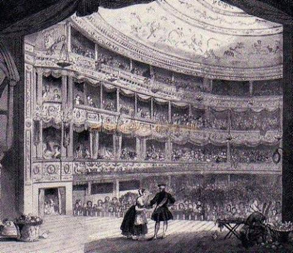
Historical illustration supplied as a view of the Lyceum. Artist, date and precise building phase are unconfirmed.

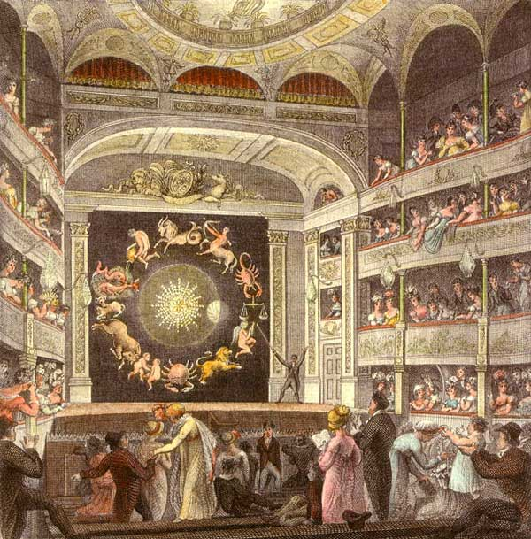
Colour illustration supplied as a view of the Lyceum. Artist, date and precise building phase are unconfirmed.

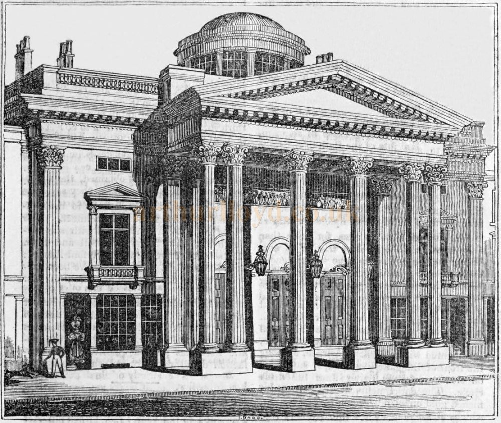
Engraved exterior supplied as a view of the Lyceum. The original image and its visible watermark are preserved; publication details and date are unconfirmed.

Modern photograph supplied as a view of the Lyceum, shown for comparison. This is not a view of the auditorium in William’s lifetime. Photographer and date unconfirmed.
1830–1831: the English Opera company at the Adelphi
When the Lyceum burned on 16 February 1830, the English Opera House company lost its theatre and much of its working material. It transferred its summer season to the Adelphi Theatre on the Strand, returning there the following year. The Adelphi Theatre Project’s seasonal history describes the strain of extra expenses and a smaller house: continuing the company’s work was a financial as well as an artistic challenge. Adelphi Theatre Project, seasonal digests.
The 1831 calendar explicitly names William Hawes as director of music under Arnold’s management. That season ran from 4 July to 28 September, with 75 evening performances. It credits Hawes with music for The Quartette; or, Interrupted Harmony, The Haunted Hulk and The Old Regimentals. This records his active place in sustaining English opera after the fire. The Adelphi Theatre was a separate venue from the family home at 7 Adelphi Terrace. English Opera Company at the Adelphi, 1831 calendar and personnel.
The Adelphi in pictures

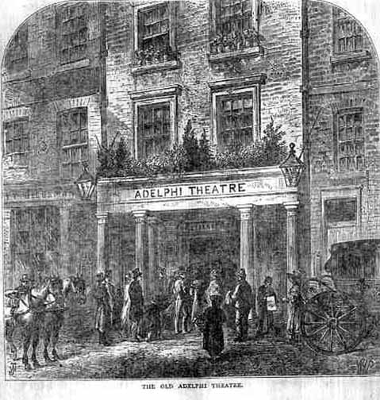
Engraving captioned “The Old Adelphi Theatre”, showing its Strand frontage. Supplied for the family archive; artist and publication date unconfirmed.

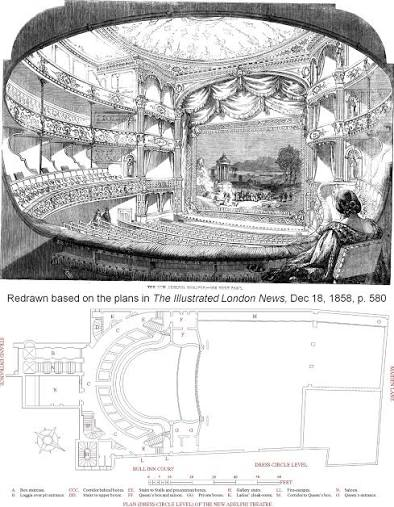
The supplied sheet identifies plans redrawn from The Illustrated London News, 18 December 1858, p. 580. This later view postdates William’s death in 1846 and does not depict the theatre as it stood during his 1830–1831 seasons.
Financial reverses, bankruptcy and a fresh publishing business
These ambitions exposed William to commercial risk. The historical DNB reports that the Harmonic Institution failed and that he extricated himself through an act of bankruptcy, subsequently publishing on his own account in the Strand. It also records an unsuccessful 1822 copyright suit over a Scottish song he had edited. These setbacks form part of his career alongside his public musical appointments. Historical DNB account.
The precise bankruptcy date needs confirmation from the legal notice: published summaries disagree, with July 1827 appearing in one account and 1828 in IMSLP’s publisher history. The latter places his independent business first at 7 Adelphi Terrace and subsequently at 355 Strand. The failure therefore did not end his publishing activity. IMSLP publisher history.
Bankruptcy evidence: One bankruptcy episode is supported for William the composer; repeat proceedings have not yet been established. The separate bankruptcy recorded for his son, William Henry Bartleman Hawes, belongs to the next generation and should not be counted as another bankruptcy of his father.
Songs, glees and historic music
The 1824 entry lists many songs and glees associated with Hawes, including arrangements of traditional airs such as Barbara Allan and Comin’ through the rye. It also credits him with republishing Thomas Morley’s Triumphs of Oriana. The list combines original pieces and arrangements and should not be interpreted as a catalogue of exclusively original compositions.
The next generation
The Oxford biographical register identifies William Henry Bartleman Hawes as William’s second son. The family tree also records his daughter Maria Billington Hawes, the singer.
Evidence still to check
The exact baptismal record, original institutional appointment registers and individual musical publications should be inspected alongside the 1824 dictionary. William’s portrait on this website was supplied by the family in November 2026.
Facts and dates
- Recorded life dates
- 1785–1846
- Family-tree generation
- Generation 2
- Record status
- 1785 parish baptism extract; 1805 marriage extract; published music history
- Spouse or partner
- Elizabeth Mullinex
- Birth (1785 extract)
- 24 June 1785, St George’s, Hanover Square
- Baptised
- 3 July 1785, St George’s, Hanover Square
- Parents
- John and Ann Hawes
- Marriage
- 12 March 1805, Elizabeth Mullinex, St George’s, Hanover Square
- Born
- 21 June 1785 — corrected date
- Died
- 18 February 1846
- Known family link
- Father of William Henry Bartleman Hawes
- Occupation
- Composer, musician
1785–1846
Family records
Dates and events recorded in the family records. Month-only dates may be registration periods. Where sources disagree, the differences are noted below.
Research note: Birth-date conflict: the family records give 28 November 1785, whereas the existing parish extract gives 24 June 1785 and baptism on 3 July 1785. The parish-extract date is retained; the family records date is an unresolved alternative.
- Birth
- 28 Nov 1785 · Middlesex, England
Source: London, England, Church of England Deaths and Burials, 1813-1980 — Call Number: DL/T/041/014 Record ↗; Dictionary of National Biography, Volumes 1-20, 22 Record ↗; 1841 England Census — Class: HO107; Piece: 739; Book: 6; Civil Parish: St Martin in The Fields; County: Middlesex; Enumeration District: 19; Folio: 52; Page: 6; Line: 16; GSU roll: 438840 Record ↗ - Residence
- 25 May 1802 · Middlesex, England
Source: UK, Register of Duties Paid for Apprentices' Indentures, 1710-1811 — The National Archives of the UK (TNA); Kew, Surrey, England; Collection: Board of Stamps: Apprenticeship Books: Series IR 1; Class: IR 1; Piece: 38 Record ↗ - Residence
- 1841 · 7 adelphi terrace, westminster, London, England
Source: 1841 England Census — Class: HO107; Piece: 739; Book: 6; Civil Parish: St Martin in The Fields; County: Middlesex; Enumeration District: 19; Folio: 52; Page: 6; Line: 16; GSU roll: 438840 Record ↗ - Residence
- London, Middlesex, England
Source: England & Wales, Prerogative Court of Canterbury Wills, 1384-1858 — The National Archives; Kew, Surrey, England; Records of the Prerogative Court of Canterbury, Series PROB 11; Class: PROB 11; Piece: 2032 Record ↗ - Death
- 18 Feb 1846 · 7 Adelphi Terrace St Martin in the Fields London,
No separate source citation is recorded for this event. - Burial
- 25 Feb 1846 · All Souls, Kensal Green, England
Source: London, England, Church of England Deaths and Burials, 1813-1980 — Call Number: DL/T/041/014 Record ↗ - Marriage
- With Elizabeth Molyneux · 12 Mar 1805 · St Georges, Hanover Square London, England
Source: London, England, Church of England Marriages and Banns, 1754-1921 — London Metropolitan Archives, Saint George, Hanover Square: Hanover Square, Westminster, Transcript of Baptisms, Marriages and Burials, 1802 Nov-1805 Sep, DL/t Item, 089/002 Record ↗
Name in family records: William Hawes.
Oxford Dictionary of National Biography
The publicly available Oxford DNB extract gives birth on 21 June 1785, Chapel Royal chorister service from 1795, and appointment at St Paul’s in 1812. The family-held parish extract gives 24 June 1785; the contemporary 1824 account instead gives 1793 and 1814 for the two career dates. These differences remain open for comparison with original registers. Only the public extract has been consulted; the full article requires access.
J. A. F. Maitland; David J. Golby, “Hawes, William (1785–1846), composer”, Oxford DNB (2004).
Original family records
Open a record to see its transcription, original photograph where published, and research notes. Only verified repository images are previewed below.
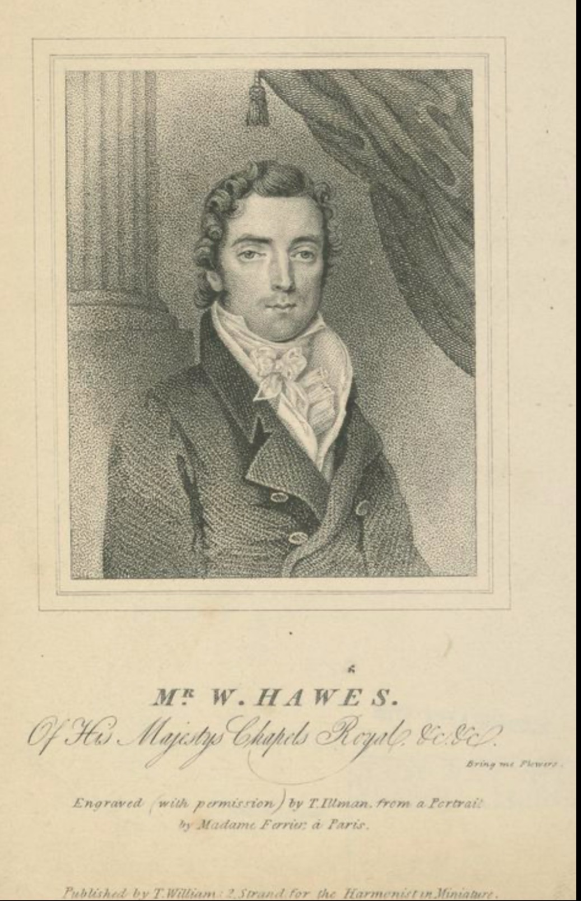
Drawn on stone from life; print marked Proof.
View portrait and printed credits →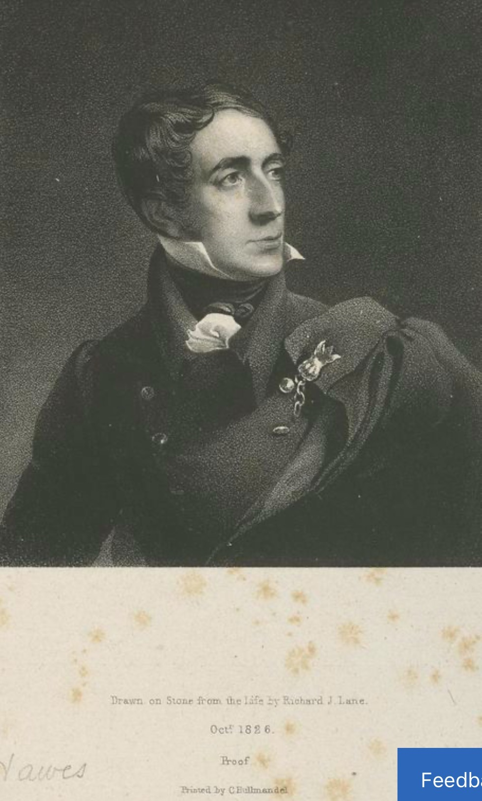
T. Tilman after a portrait by Madame Ferrier, Paris.
View portrait and printed credits →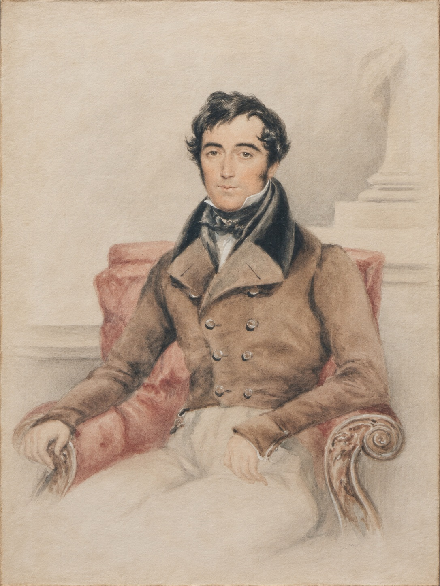
Framed painted portrait, with original photograph and cleaned reproduction. Artist and date unconfirmed.
View portrait and archive notes →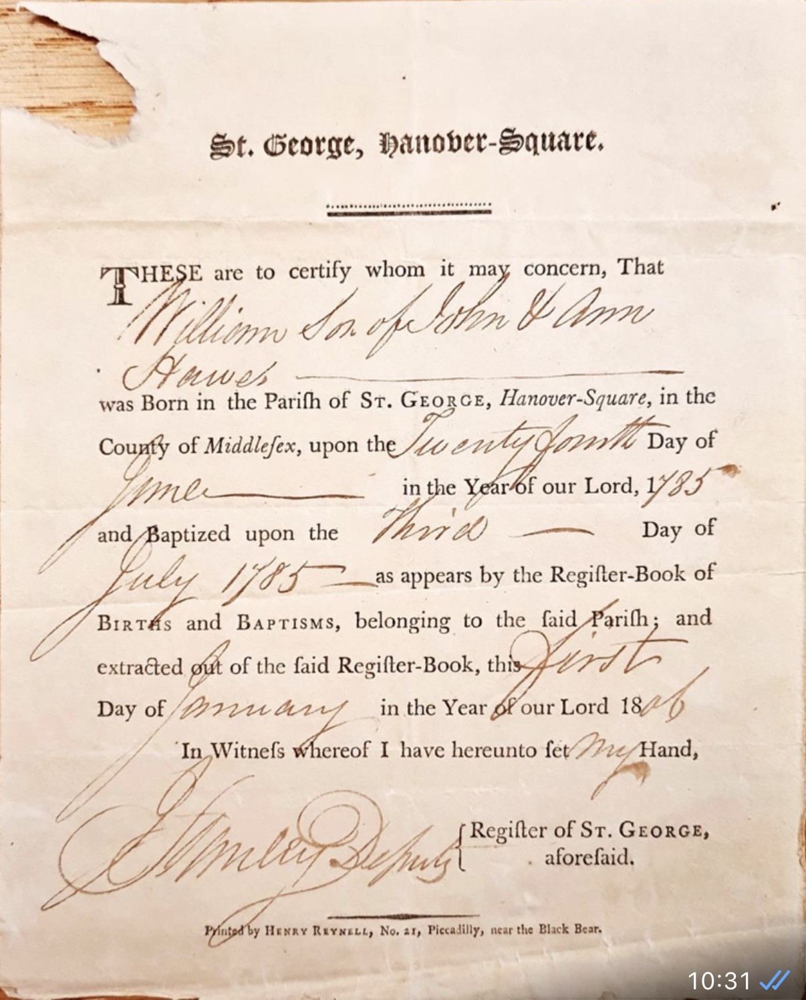
St George, Hanover Square
Read document and research notes →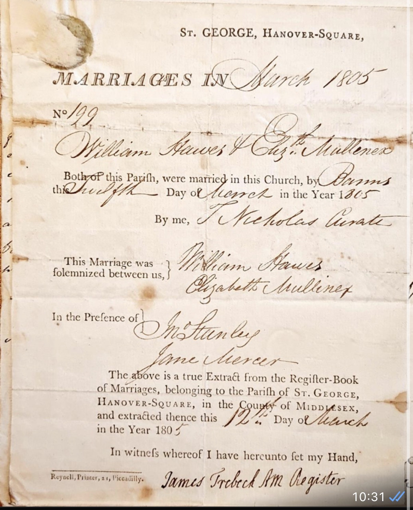
Parish marriage register, 12 March
Read document and research notes →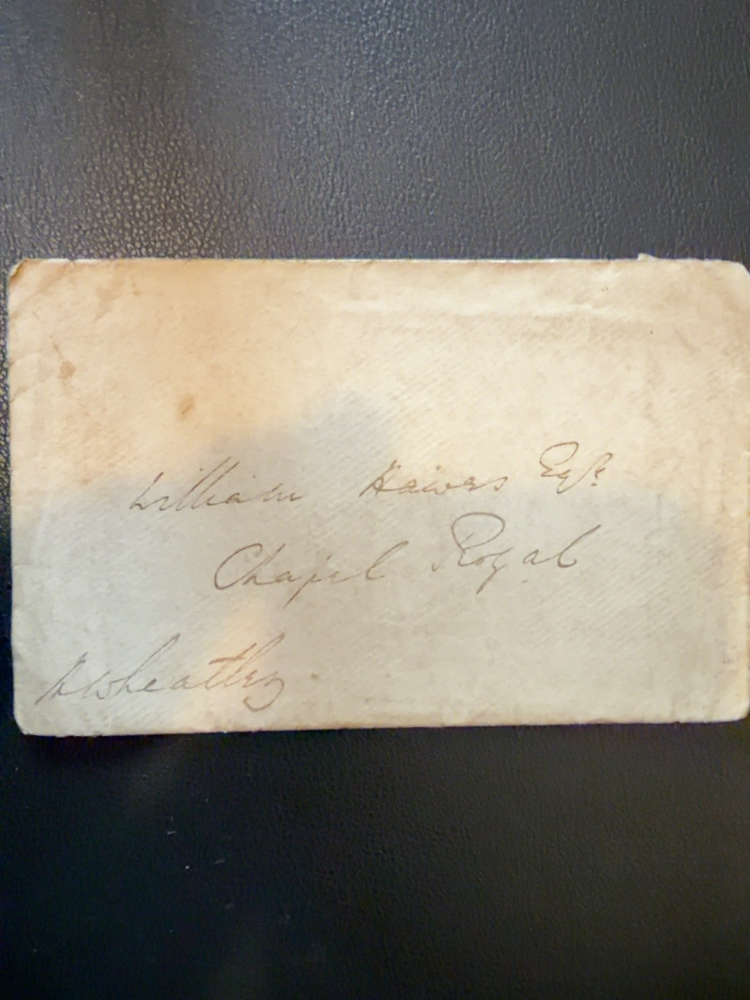
Original manuscript address
Read document and research notes →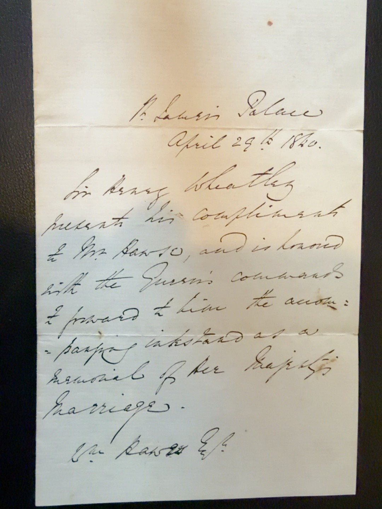
Sir Henry Wheatley correspondence
Read document and research notes →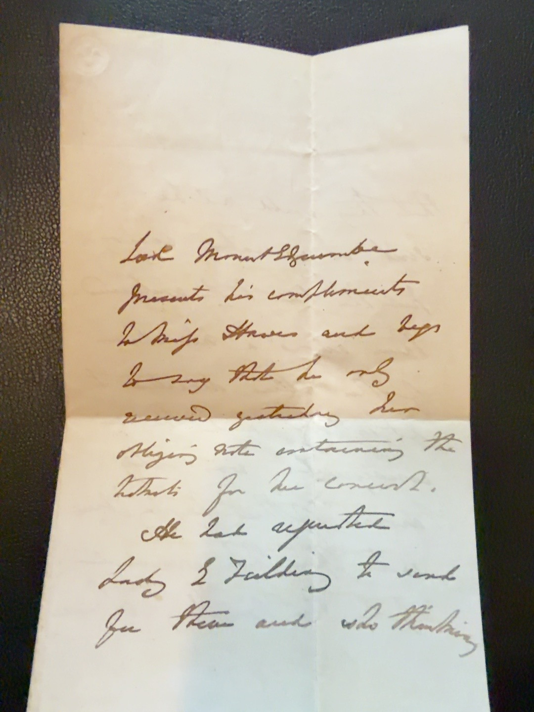
Concert invitation, two-page original
Read document and research notes →
Original family source or associated research record.
Read document and research notes →Further reading and sources
1841 household transcript: 7 Adelphi Terrace — HO 107/739/6, folio 52, page 6
- St Paul’s Cathedral Choir School archival description
- A History of English Cathedral Music (contemporary historical secondary account)
- Oxford register entry for his son
- William Hawes biography
- 1824 contemporary biography — full transcription
- John Sainsbury, A Dictionary of Musicians (1824)
- WikiTree Hawes-2033
- Peter Horton (2023), opera and music publishing — public abstract
- Adelphi Theatre Project: English Opera Company, 1831
- Adelphi Theatre Project: seasonal digests, including the 1830 fire and transfer
- British Library, Add MS 33810: Hawes’s adaptation of Der Vampyr
- Frank Kidson, British Music Publishers, p. 112: Royal Harmonic Institution
- Historical Dictionary of National Biography: opera adaptations and financial reverses
- IMSLP: W. Hawes, independent publishing business
This is a research biography, not a fully verified pedigree. Original photographs, contemporary records, later copies, information in family records and family recollections are distinguished where their evidential status is known. Details of living descendants are omitted.
Family connections
Related people
Family-supplied historical portrait